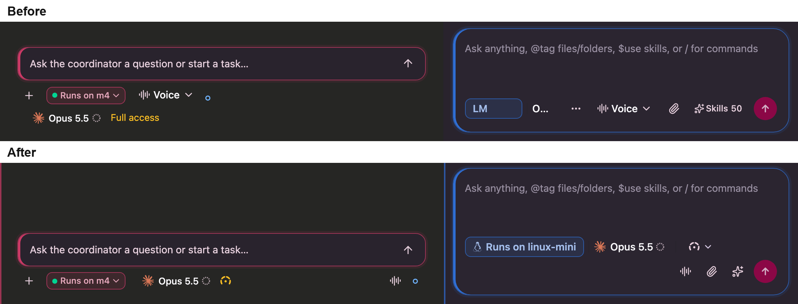
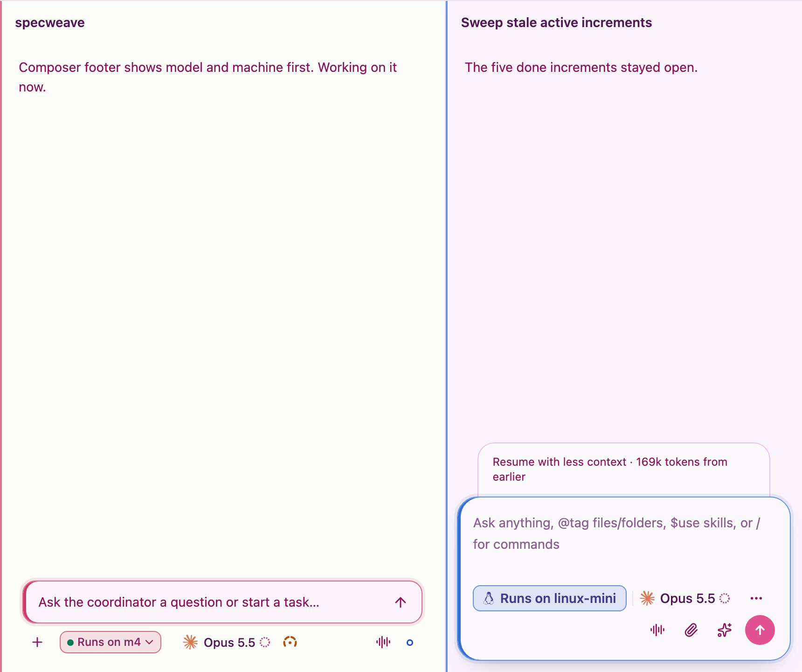
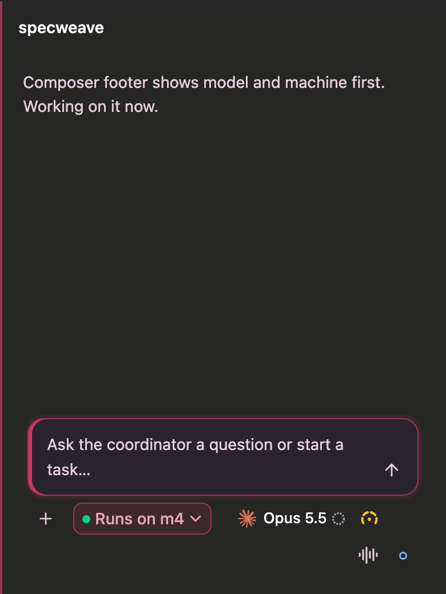
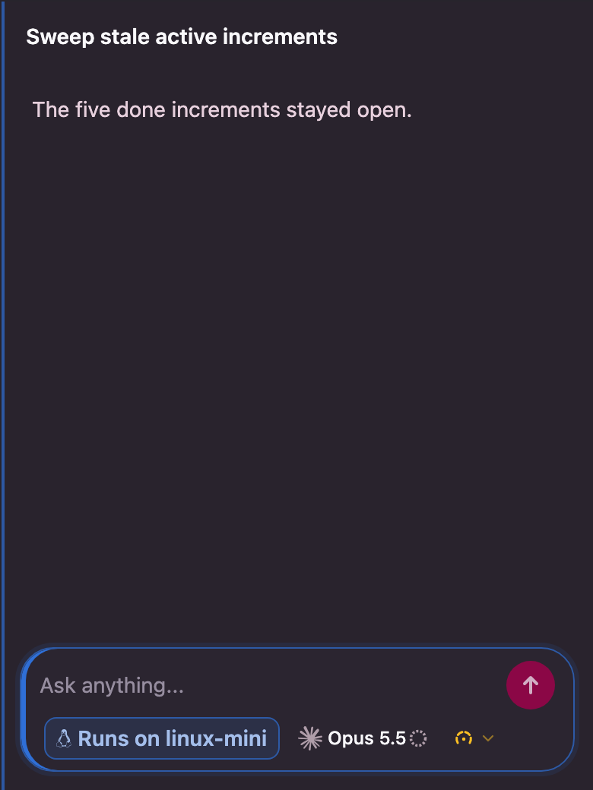

Increment 1321, November 13, 2026. Thread composer shown with a linux-mini thread (blue) and Claude Opus 5.5. Widths are the composer card's own width: a full window, a half-screen pane, a phone.
"Runs on linux-mini" keeps its full width, Voice, attach and "Skills 50" keep theirs on the right, and the model is cut to "Op".
390 px
480 px
Reads as one "where and what". Two menus behind one pill are hard to hit on a phone, and the model chip's fit logic measures its own trigger, so the pill would need its own measuring.
720 px
390 px
The machine keeps its own chip and menu (icon and name in its color, no "Runs on"), the model sits right after it, and voice, attach and skills are icons with tooltips. Narrow, the machine gives way to its short label ("LM") before the model's name is cut. Smallest change to tested fit code; every control keeps a full-size hit target.
720 px
480 px
390 px
Coordinator, same rule: + · [m4] · Opus 5.5 · Full access on one row where it fits, then the voice icon and a status dot; the dot gets words only for "Needs you" and "Run failed".
Coordinator, 760 px
Frees the whole bottom line for the model. The tab collides with the banners that sit on that edge ("Resume with less context", subagents) and moves the machine away from the model it pairs with.
480 px
Today the window's top line takes the machine of the view in front, and a thread outranks its project (apps/web/src/studio/windowMachine.ts). With the M4 coordinator in the middle and a linux-mini thread on the right, the whole top line is blue. The thread's composer also drops its blue border while a banner sits above it.
Before
After (picked): no window-wide line; each pane's leading edge, composer border and Send wear the machine that runs it
| A split chip | B machine tag + model | C top-edge tab | |
|---|---|---|---|
| Model readable at 390 px | yes | yes | yes |
| Machine next to the model | yes | yes | no |
| Separate hit targets on a phone | tight | yes | yes |
| Works with banners above the box | yes | yes | collides |
| Reuses tested fit code (1284, PR 235) | no | yes | partly |
Anton, November 13, 2026: keep "Runs on <machine>", put the model right next to it, both readable at every width, and let the rest give way. So the chip keeps its words and its full width; below 560 px the thread composer's foot wraps, with the machine and the model on the first row and voice, attach, skills and Send on the second. Below 720 px Send drops "to <machine>". Real app components, headless captures from apps/web/tests/composer-foot/verify.mjs.
Desktop window 1100 px: coordinator on m4 (left), thread on linux-mini (right)

860 px window, light, banner above the thread's box

Coordinator, 390 px

Thread, 390 px (compact phone composer)
